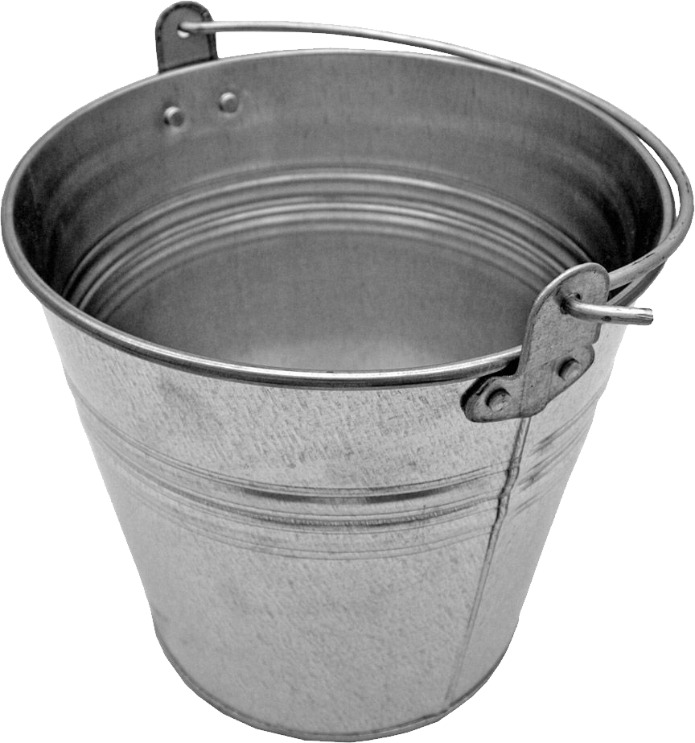
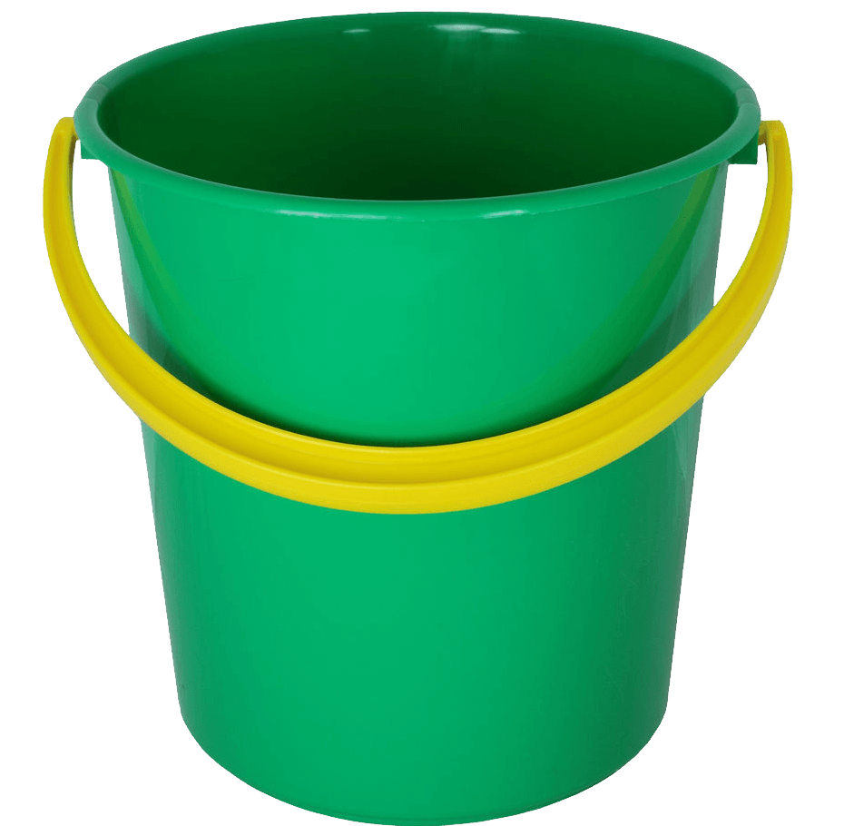

Metalowe wiadra
Metalowe wiadra są wytrzymałe, odporne na uszkodzenia i sprawdzają się przy cięższych pracach ogrodowych oraz w warsztacie.

Plastikowe wiadra
Plastikowe wiadra są lekkie, tanie i wygodne do codziennego sprzątania oraz prania.